Materiais
A seguir estarão apresentados todos os materiais essenciais para realização da oficina com algumas curiosidades e informações adicionais sobre cada item. Assim como algumas dicas que pouparão desperdícios e maximizarão a eficiência do projeto.
Posteriormente estará disposta uma foto retirada do livro base para nossa oficina que representa alguns cuidados a mais que possam fornecer maior conforto e praticidade para realização do artesanato. Cada item corresponderá a sua numeração na imagem assim como informações extras sobre cada um.
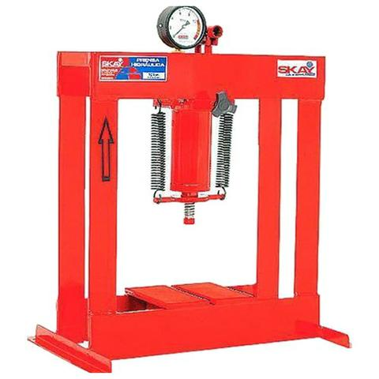

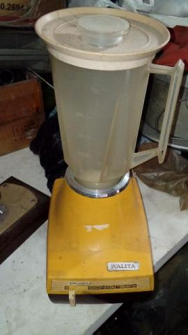
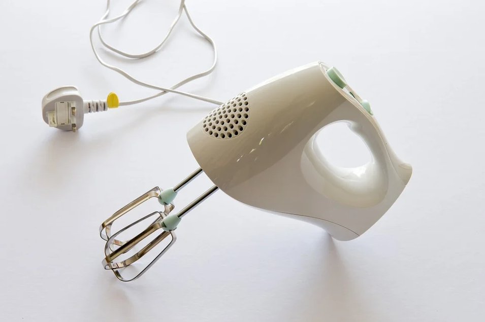
Caso opte por fazer o molde, certifique-se de lixar e envernizar as madeiras por inteiro, com duas a três camadas de verniz. A tela de mosquiteiro deve ser recortada pouco maior que o tamanho do bastidor, grampeada sem que hajam ondulações na tela (para isso o auxílio de mais uma pessoa ou seguradores de metal seria o recomendado) e depois recortada a rebarba com excesso. Recomenda-se usar fios e grampos não oxidantes para que o produto dure por anos, mas o mais importante é cobrir os grampos nas margens do bastidor com silver tape ou alguma fita isolante para que esta região não entre em contato com a água.
Por fim o marco será do mesmo tamanho da forma, mas sem a necessidade de tela. No lugar é possível confeccionar um limitador que dará desenho á folha caso queiramos, por exemplo, fazer um papel de carta ou cartão. Do mesmo jeito que o tamanho do molde definirá o tamanho da folha.
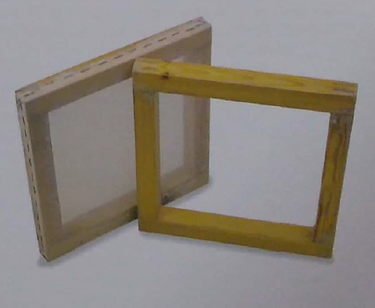

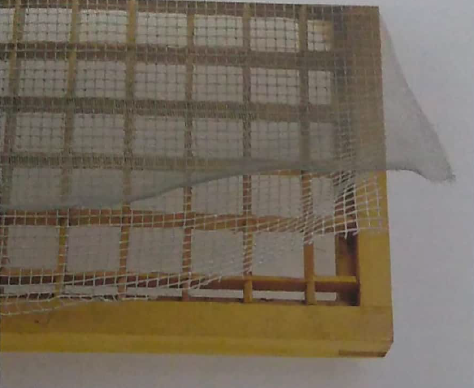
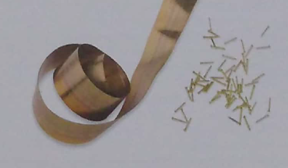

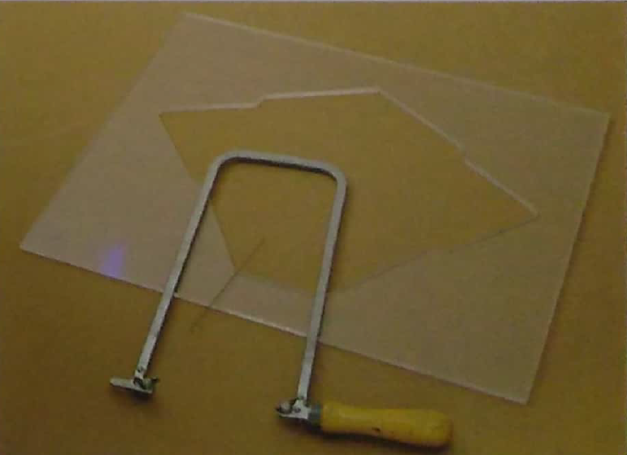

Adequadamente os feltros são a melhor opção por serem resistentes e duráveis, mas também podem ser caros e neste caso os panos de pia de cozinha funcionam muito bem apesar de durarem menos. Normalmente os mais baratos são os melhores para essa função e seu contraponto é serem mais moles, dificultando a locomoção com milhas grandes.
Para sua lavagem se utiliza detergente e, caso necessário, cloro para branqueamento e, apesar de se manterem de molho durante boa parte da oficina, devem ser desumidificados e deixados para secar. Outro cuidado muito importante é assegurar que não se desfiem, pois se tornam inúteis quando isso ocorre.
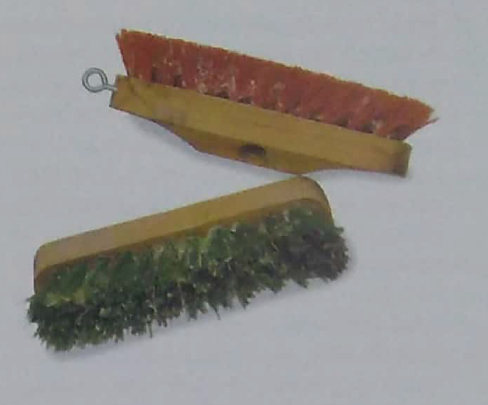
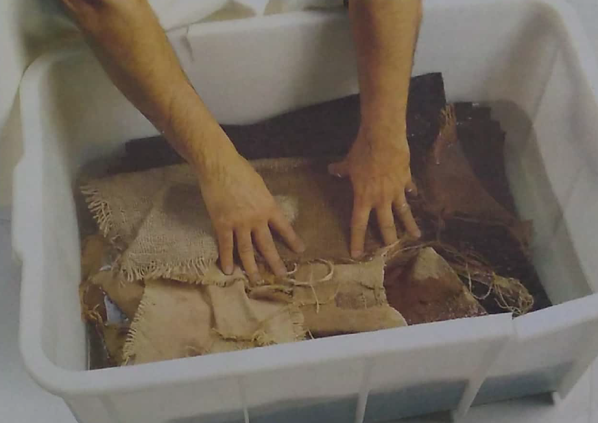
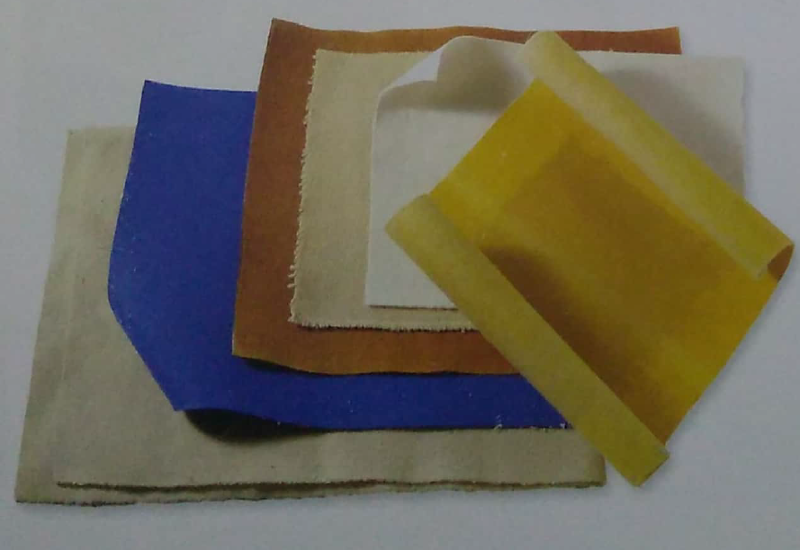
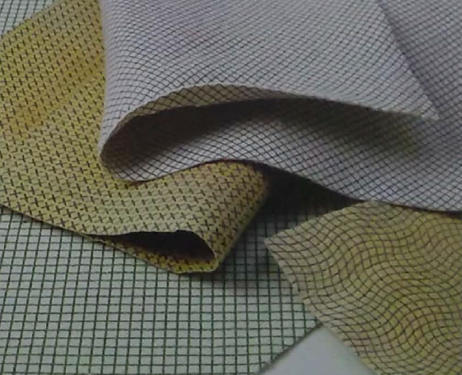
A limpeza desse material deve ser realizada com escovas de cerdas, nylon ou tecido, nunca as de metais. Para sua utilização os feltros ou panos devem estar ensopados em tinas a parte e serem retirados um por vez quando forem utilizados. Feltros e carpetes ou panos de cozinha que podem ser utilizados como buréis.
As tinas são grandes caixas plásticas (normalmente com tampa) onde serão mergulhados os buréis e, por muitas vezes, armazenadas as fibras e pastas refinadas (na ausência de um bidão ou balde) além de ser o recipiente de homogeneização da cola e local final onde serão coletadas as fibras com os moldes. Apesar de não ser necessário, as tinas podem ter um sistema de escoamento e até mesmo rodas para facilitar no transporte caso decidirmos por trabalhar com grandes quantidades de materiais na oficina.
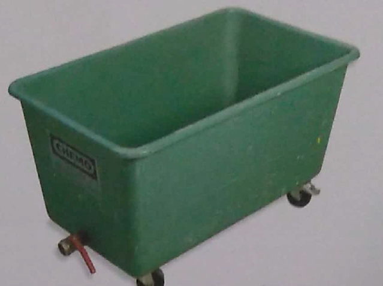
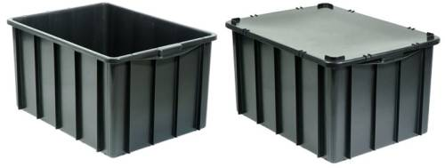
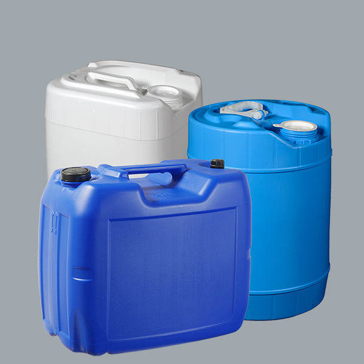
Trituradoras (domésticas, de jardinagem, etc), tesouras, colas sintéticas (como de carpinteiro, papelaria, de encadernação, látex, de celulose, etc), baldes para armazenamento, silk screens (caso os baldes não tenham tampa, ela serve como excelente protetor para armazenamento), peneiras, pregadores, pistola de grampos, martelo e pregos, luvas, botas de borracha, aventais, corantes hidrossolúveis, medidor de pH, entre outros itens de suma utilidade.
Esta é uma foto retirada do livro base para nossa oficina que representa um ambiente projetado especificamente para a produção da oficina com disposição de material e áreas de escoamento e de trabalho bem definidas.